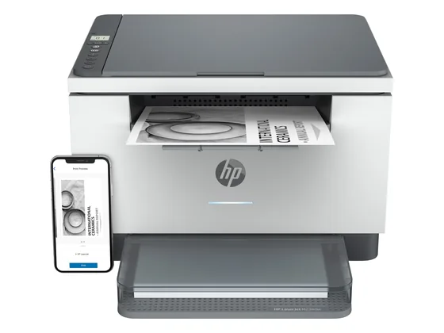
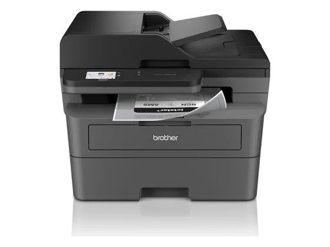
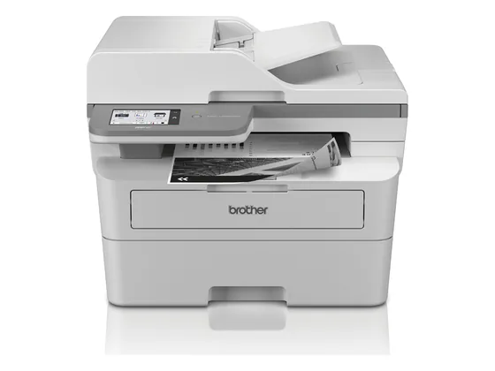
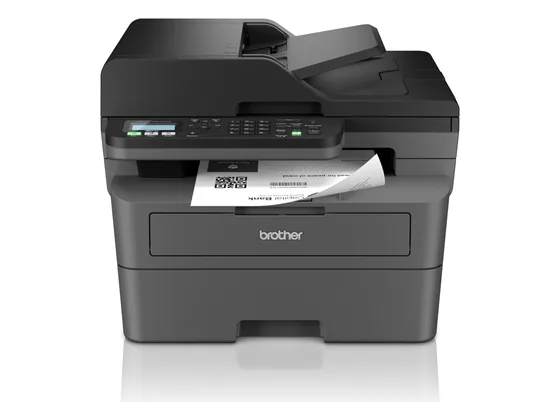

#1notre choixLe choix de la bande
Multifonction laser N&B · recto-verso · Wi-Fi
Le multifonction laser noir et blanc le plus raisonnable : rapide, recto-verso automatique, scanner et Wi-Fi, avec des toners à bon rendement.
Testé3 tests, sans note chiffrée
env. 150 €prix indicatif#2sur 10Le multifonction compact
Multifonction laser N&B · Wi-Fi · compacte
La version multifonction de l'entrée de gamme Brother : impression laser, copie et scan dans un format compact, testée par Clubic.
7,0/101 note presse · gamme
1 seul test notéenv. 120 €prix indicatif#3sur 10La rapide
Imprimante laser N&B · recto-verso · Wi-Fi · Ethernet
Une laser noir et blanc rapide avec recto-verso automatique, Wi-Fi et Ethernet : la bonne imprimante de bureau, sans scanner.
Testé3 tests, sans note chiffrée
env. 140 €prix indicatif#4sur 10Le 4-en-1

Multifonction laser N&B · 4-en-1 · chargeur
Un multifonction laser 4-en-1 avec chargeur de documents et recto-verso : tout ce qu'il faut pour un petit bureau, testé par trois associations de consommateurs.
Testé3 tests, sans note chiffrée
env. 190 €prix indicatif#5sur 10L'alternative Canon

Imprimante laser N&B · recto-verso · Wi-Fi
Une laser noir et blanc rapide de Canon, avec recto-verso automatique et Wi-Fi, testée par Test-Achats et Which?.
Testé3 tests, sans note chiffrée
env. 220 €prix indicatif#6sur 10La moins chère
Imprimante laser N&B · Wi-Fi · compacte
Une petite laser noir et blanc à moins de 100 € : elle imprime vite et proprement, sans fioritures (pas de scanner, recto-verso manuel).
Testé2 tests, sans note chiffrée
env. 90 €prix indicatif#7sur 10Le HP

Multifonction laser N&B · recto-verso · Wi-Fi
Le multifonction laser noir et blanc de HP : compact, recto-verso automatique et application HP Smart. Attention aux toners propriétaires.
Testé2 tests, sans note chiffrée
env. 130 €prix indicatif#8sur 10Le scan recto-verso

Multifonction laser N&B · chargeur · recto-verso
Un multifonction laser noir et blanc avec chargeur de documents, recto-verso et écran tactile, sans le fax.
Testé2 tests, sans note chiffrée
env. 200 €prix indicatif#9sur 10Le plus équipé

Multifonction laser N&B · 4-en-1 · écran tactile
Le haut de la gamme laser noir et blanc de Brother : rapide, écran tactile, chargeur, recto-verso et fax. Pour les bureaux qui impriment beaucoup.
Testé2 tests, sans note chiffrée
env. 280 €prix indicatif#10sur 10Le 4-en-1 malin

Multifonction laser N&B · 4-en-1 · chargeur
Un 4-en-1 laser noir et blanc avec chargeur et recto-verso, de la gamme MFC-L2820DW testée par RTINGS.
Testé1 test, sans note chiffrée
env. 200 €prix indicatif